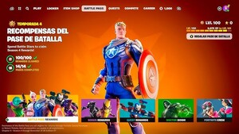
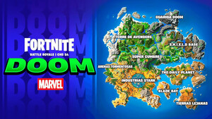

La nueva temporada de Fortnite, Capítulo 5 Temporada 4 llamada "Alerta: Doom", se lanzó el 16 de agosto de 2024 y está centrada en Marvel. Incluye skins como Gwenpool, una versión de Gwen Stacy combinada con Deadpool, War Machine, el aliado militar de Iron Man, y Shuri, la princesa de Wakanda y actual Black Panther. Además de estas skins, la temporada introduce nuevas ubicaciones y armas inspiradas en el universo Marvel aqui puedes ver mas información.
Ver skins del pase de batalla.
Ver las nuevas armas de Marvel.Ver las nuevas ubicaciones del mapa.

Próximamente estaremos dando más datos sobre el juego, como cuánta es la experiencia máxima que dan por modo, cómo resolver las misiones semanales, nerfeos de armas, secretos, etc. Estén atentos al próximo contenido.